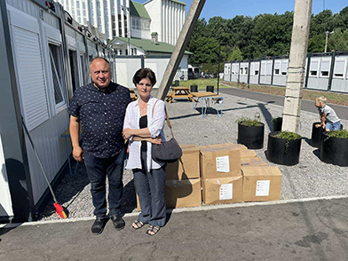
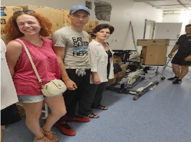
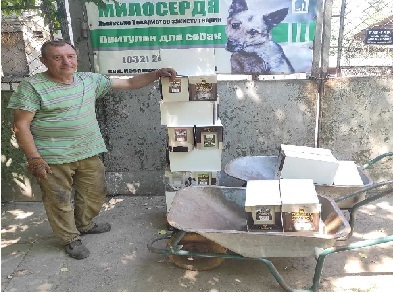
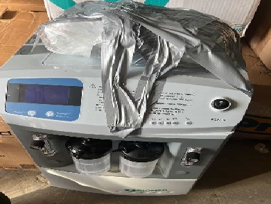

-

Весь світ підтримує Україну та українців. Дякуємо усім благодійникам, які долучаються до допомоги! БФ "Леополіс ГРУП" направив гуманітарну допомогу (14 коробок (продукти харчування, одяг, засоби гігієни, дитячий одяг та іграшки) від волонтерів Австрії для "Сихівське модульне містечко для впо "МАРІЯПОЛІС".
Допомога
для "Сихівське модульне містечко для впо "МАРІЯПОЛІС"
-

Висловлюємо щиру подяку всім, хто долучається до волонтерського руху задля допомоги Україні! Направили допомогу: апарат для переміщення хворих, ходунці на колесах, крісло каталка, перев'язувальні матеріали, 11 ящиків урологічних прокладок.
Допомога
для "Багатопрофільна клінічна лікарня інтенсивних методів лікування та швидкої медичної допомоги"
-

Допомога для братів наших менших🐶 Передали крекери, снеки і інші смаколики (27 упаковок) для собак ГО "Львівське товариство захисту тварин" "Притулок Милосердя"🐕🦺
Допомога
для ГО "Львівське товариство захисту тварин" "Притулок Милосердя"🐕🦺
-

Кисневий концентратор Біомед JAY-10, був наданий Благодійний фонд Леополіс ГРУП у формі благодійної допомоги з метою забезпечення особового складу військової частини А4093💪 в Житомирській області.
Допомога
для забезпечення особового складу військової частини А4093💪 в Житомирській області.